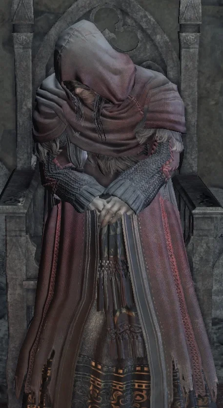

← Volver
← Volver
La Sierva del Santuario es un NPC de Dark Souls III, ubicada en el Santuario del Enlace de Fuego. Ella es el mercader principal disponible para el jugador y su inventario de objetos disponibles para la compra puede ser expandido al entregarle las Cenizas Umbrales diseminadas por todo Lothric.
¿Dónde se puede encontrar a la Sierva del Santuario en Dark Souls III? Se la puede encontrar en el Santuario del Enlace de Fuego, en el pasillo que se encuentra entre Andre y la Guardiana de Fuego.
| Sierva del Santuario del Enlace, objetos disponibles | Variante | Cantidad | Probabilidad | Suerte |
|---|---|---|---|---|
| Anillo de la Sacerdotisa | No | 1 | 10% | No |
| Ítems disponibles para la venta | Cantidad | Almas | Requerimiento |
|---|---|---|---|
| Brasa | 3, 4, 5 ó 6 | 2000 ó 2500 ó 5000 | Varias cenizas dan como resultado esto. Si se le entregan todas las cenizas, tendrá cuatro pilas de 3 brasas, dos pilas de 4 brasas y una pila de 6 brasas. |
| Polvo Reparado | ∞ | 600 | Inicio del juego |
| Grupo de Musgo Morado | 6 | 500 | Inicio del juego |
| Bomba Incendiaria | ∞ | 100 | Inicio del juego |
| Piedra Prisma | ∞ | 10 | Inicio del juego |
| Hueso del Retorno | ∞ | 500 | Inicio del juego |
| Esteatita de Letrero Blanco | 1 | 500 | Inicio del juego |
| Dedo Seco | 1 | 2000 | Inicio del juego |
| Llave de la Torre | 1 | 20000 | Inicio del juego |
| Flecha del Alma | 1 | 2000 | Inicio del juego |
| Dardo de Farron | 1 | 1000 | Inicio del juego |
| Ayuda para sanar | 1 | 500 | Inicio del juego |
| Daga | ∞ | 300 | Inicio del juego |
| Espada Corta | ∞ | 600 | Inicio del juego |
| Cimitarra | ∞ | 600 | Inicio del juego |
| Alabarda | ∞ | 1500 | Inicio del juego |
| Bastón del Hechicero | ∞ | 500 | Inicio del juego |
| Talismán | ∞ | 500 | Inicio del juego |
| Antorcha | ∞ | 300 | Inicio del juego |
| Escudo de Cuero | ∞ | 500 | Inicio del juego |
| Parma Carmesí | ∞ | 800 | Inicio del juego |
| Escudo Redondo del Guerrero | ∞ | 600 | Inicio del juego |
| Escudo de Cuero Grande | ∞ | 500 | Inicio del juego |
| Yelmo de Cadena | ∞ | 500 | Inicio del juego |
| Armadura de Cadenas | ∞ | 800 | Inicio del juego |
| Guanteles de Cuero | ∞ | 500 | Inicio del juego |
| Leggings de Cadena | ∞ | 500 | Inicio del juego |
| Flecha de Madera | ∞ | 5 | Inicio del juego |
| Perno de Madera | ∞ | 10 | Inicio del juego |
| Paquete de Pino de Carbón | ∞ | 300 | Cenizas del Funerario |
| Resina de Pino de Carbón | ∞ | 500 | Cenizas del Funerario |
| Llave de la Tumba | 1 | 1500 | Cenizas del Funerario |
| Anillo Salvavidas | 1 | 1500 | Cenizas del Cazador de Sueños |
| Flecha de Pluma | ∞ | 100 | Cenizas del Cazador de Sueños |
| Fragmento de Titanita | ∞ | 800 | Cenizas del Cazador de Sueños |
| Arco Compuesto | ∞ | 3500 | Cenizas del Cazador de Sueños |
| Resina de Pino Podrido | ∞ | 500 | Cenizas del Cazador de Sueños |
| Paquete de Pino Dorado | 6 | 600 | Cenizas del Cazador de Sueños |
| Resina de Pino Dorado | 3 | 1000 | Cenizas del Cazador de Sueños |
| Perdigón de Bicho Negro | ∞ | 1500 | Cenizas del Cazador de Sueños |
| Flor Verde | ∞ | 1000 | Cenizas del Cazador de Sueños |
| Bendición Oculta | 1 | 1000 | Cenizas del Cazador de Sueños |
| Perdigón de Bicho Azul | ∞ | 1500 | Cenizas Cubiertas de Excremento |
| Grupo de Musgo Morado Floreciente | ∞ | 1000 | Cenizas Cubiertas de Excremento |
| Anillo de Veta de Madera | 1 | 3000 | Cenizas del Oriental |
| Perdigón de Bicho Rojo | ∞ | 1000 | Cenizas de Parches |
| Bomba Incendiaria Negra | ∞ | 300 | Cenizas de Parches |
| Bomba Incendiaria Negra de Cuerda | ∞ | 300 | Cenizas de Parches |
| Resina de Pino Humana | ∞ | 1500 | Cenizas de Parches |
| Calavera Seductora | ∞ | 800 | Cenizas de Parches |
| Moneda Oxidada | ∞ | 200 | Cenizas de Parches |
| Basura | ∞ | 200 | Cenizas de Parches |
| Daga de Parada | ∞ | 2000 | Cenizas de Parches |
| Shotel | 2 | 4000 | Cenizas de Parches |
| Lanza Alada | ∞ | 1500 | Cenizas de Parches |
| Armadura de Cuero Negro | ∞ | 2500 | Cenizas de Parches |
| Guantes de Cuero Negro | ∞ | 2000 | Cenizas de Parches |
| Botas de Cuero Negro | ∞ | 2000 | Cenizas de Parches |
| Flecha Envenenada | ∞ | 120 | Cenizas de Parches |
| Perdigón de Bicho Rojo | ∞ | 1000 | Cenizas de Parches |
| Grupo de Musgo Morado | ∞ | 500 | Cenizas del Paladín |
| Perdigón de Bicho Amarillo | ∞ | 1500 | Cenizas del Paladín |
| Amuleto del Cazador de No Muertos | ∞ | 500 | Cenizas del Paladín |
| Encanto de Duelo | ∞ | 500 | Cenizas del Paladín |
| Estrella del Amanecer | ∞ | 2500 | Cenizas del Paladín |
| Hacha de Medialuna | ∞ | 4000 | Cenizas del Paladín |
| Talismán de Lona | ∞ | 3000 | Cenizas del Paladín |
| Anillo de Escudo de Lloyd | ∞ | 2500 | Cenizas del Paladín |
| Grupo de Musgo Rojo Sangre | ∞ | 500 | Cenizas de Greirat |
| Cuchillo Arrojadizo | ∞ | 20 | Cenizas de Greirat |
| Bomba Incendiaria de Cuerda | ∞ | 300 | Cenizas de Greirat |
| Cuchillo de Bandido | ∞ | 1500 | Cenizas de Greirat |
| Espada Larga | ∞ | 1000 | Cenizas de Greirat |
| Espada Bastarda | ∞ | 3000 | Cenizas de Greirat |
| Candelabro del Erudito | ∞ | 3500 | Cenizas de Greirat |
| Maza | ∞ | 600 | Cenizas de Greirat |
| Lanza | ∞ | 600 | Cenizas de Greirat |
| Ballesta Ligera | ∞ | 1000 | Cenizas de Greirat |
| Escudo | ∞ | 2000 | Cenizas de Greirat |
| Escudo Redondo de Cuerno de Alce | ∞ | 1500 | Cenizas de Greirat |
| Escudo Redondo | ∞ | 1000 | Cenizas de Greirat |
| Escudo de Cometa | ∞ | 4000 | Cenizas de Greirat |
| Armadura de Cuero | ∞ | 800 | Cenizas de Greirat |
| Guantes de Cuero | ∞ | 500 | Cenizas de Greirat |
| Botas de Cuero | ∞ | 500 | Cenizas de Greirat |
| Yelmo Estándar | ∞ | 1500 | Cenizas de Greirat |
| Armadura de Cuero Duro | ∞ | 2500 | Cenizas de Greirat |
| Guanteletes de Cuero Duro | ∞ | 1000 | Cenizas de Greirat |
| Botas de Cuero Duro | ∞ | 1000 | Cenizas de Greirat |
| Máscara de Ladrón | ∞ | 400 | Cenizas de Greirat |
| Flecha de Fuego | ∞ | 100 | Cenizas de Greirat |
| Perno Estándar | ∞ | 30 | Cenizas de Greirat |
| Yelmo del Favor | 1 | 7000 | El jugador ha obtenido el Anillo de Favor |
| Armadura Abrasada del Favor | 1 | 10000 | El jugador ha obtenido el Anillo de Favor |
| Guanteletes del Favor | 1 | 7000 | El jugador ha obtenido el Anillo de Favor |
| Leggings del Favor | 1 | 7000 | El jugador ha obtenido el Anillo de Favor |
| Resina de Pino Pálido | ∞ | 1000 | Cenizas del Jefe de Prisioneros |
| El Sombrero Puntiagudo de Karla | 1 | 5000 | Cenizas del Jefe de Prisioneros |
| El Abrigo de Karla | 1 | 8000 | Cenizas del Jefe de Prisioneros |
| Los Pantalones de Karla | 1 | 5000 | Cenizas del Jefe de Prisioneros |
| Los Guantes de Karla | 1 | 5000 | Cenizas del Jefe de Prisioneros |
| Kukri | ∞ | 50 | Cenizas del Guardián de la Tumba |
| Carthus Rouge | ∞ | 1000 | Cenizas del Guardián de la Tumba |
| Pastel de Estiércol | ∞ | 50 | Cenizas Cubiertas de Excremento |
| Pastel de Estiércol de Tallo | ∞ | 50 | Cenizas Cubiertas de Excremento |
| Rama Joven Blanca | ∞ | 1000 | Cenizas de Xantous |
| Abrigo Xanthous | 1 | 10000 | Cenizas de Xantous |
| Giamtes Xanthous | 1 | 7000 | Cenizas de Xantous |
| Pantalones Xanthous | 1 | 7000 | Cenizas de Xantous |
| Fragmento Grande de Titanita | ∞ | 4000 | Cenizas del Oriental |
| Escudo de Hierro del Este | 1 | 3000 | Cenizas del Oriental |
| Yelmo del Este | 1 | 5000 | Cenizas del Oriental |
| Armadura Oriental | 1 | 8000 | Cenizas del Oriental |
| Guanteletes del Este | 1 | 5000 | Cenizas del Oriental |
| Leggings Orientales | 1 | 5000 | Cenizas del Oriental |
| Flecha Oscura | ∞ | 200 | Cenizas del Oriental |
| Gran Flecha de Onislayer | ∞ | 600 | Cenizas del Oriental |
| Gran Flecha del Alma | 1 | 3000 | Cenizas de Orbeck |
| Flecha del Alma Pesada | 1 | 2000 | Cenizas de Orbeck |
| Gran Flecha del Alma Pesada | 1 | 4000 | Cenizas de Orbeck |
| Espada Magna del Alma | 1 | 5000 | Cenizas de Orbeck |
| Espada de Destello de Farron | 1 | 3000 | Cenizas de Orbeck |
| Arma Mágica | 1 | 3000 | Cenizas de Orbeck |
| Escudo Mágico | 1 | 3000 | Cenizas de Orbeck |
| Espectro | 1 | 2000 | Cenizas de Orbeck |
| Señuelo Auditivo | 1 | 2000 | Cenizas de Orbeck |
| Fruto de Musgo | ∞ | 1500 | Cenizas de Orbeck |
| Fruto de Musgo | ∞ | 1500 | Cenizas del Cazador de Dragones |
| Trozo de Titanita | ∞ | 13000 | Cenizas del Cazador de Dragones |
| Titanita Centelleante | ∞ | 15000 | Cenizas del Cazador de Dragones |
| Escala de Titanita | ∞ | 20000 | Cenizas del Cazador de Dragones |
| Mano Oscura | 1 | 12000 | Cenizas de Yuria |
| Piedra de Purga | ∞ | 45000 | Cenizas de Yuria |
| Cuchillo Arrojadizo Venenoso | ∞ | 100 | Cenizas de Yuria |
| Tomo Divino en Braile de Londor | 1 | 50 | Cenizas de Yuria |
| Flecha del Alma | 1 | 1000 | Cenizas de Yuria |
| Flecha del Alma Pesada | 1 | 2000 | Cenizas de Yuria |
| Espada Magna del Alma | 1 | 5000 | Cenizas de Yuria |
| Arma Mágica | 1 | 4500 | Cenizas de Yuria |
| Escudo Mágico | 1 | 4500 | Cenizas de Yuria |
| Anillo Oscuro Falso | 1 | 5000 | Cenizas de Yuria |
| Anillo Blanco Falso | 1 | 5000 | Cenizas de Yuria |
| Anillo del Sacrificio | 1 | 5000 | Cenizas de Yuria |
| Sombrero de Mano Negra | 1 | 3000 | Asesinando al Kamui de la Mano Negra |
| Armadura de la Mano Negra | 1 | 4500 | Asesinando al Kamui de la Mano Negra |
| Losa de Titanita | 1 | 30000 | Colocando todas las Cenizas de Señores en los tronos antes de NG+ |
| Yelmo de Caballero de Millwood | 1 | - | Cenizas del Capitán |
| Armadura de Caballero de Millwood | 1 | - | Cenizas del Capitán |
| Guanteletes de Caballero de Millwood | 1 | - | Cenizas del Capitán |
| Malla de Caballero de Millwood | 1 | - | Cenizas del Capitán |
| Capucha Ordenada | 1 | - | Asesinando a la Hermana Friede |
| Vestido Ordenado | 1 | - | Asesinando a la Hermana Friede |
| Pantalones Ordenados | 1 | - | Asesinando a la Hermana Friede |
Diálogo del primer encuentro
"Un placer conocerte, Ser de la Ceniza. Soy solo una humilde doncella del santuario. Armas, armaduras, baratijas y hechizos... Tengo un montón de cositas para aliviar la carga de un viajero cansado. ...Y sí, también soy un No Muerto, pero no tan caritativo como para regalar mis bienes. Ser de la Ceniza, trae almas y tráelas ante mí. Como es tu costumbre, ¿no?"
Diálogo del primer encuentro, si ya has hablado con ella en las Tumbas Olvidadas
"Oh, tú... Oh, no, no es nada, Ser de Ceniza. Solo soy una humilde doncella del santuario. Armas, armaduras, abalorios y hechizos... Tengo un montón de cositas para aliviar la carga de un viajero cansado. ...Y sí, también soy un No Muerto, pero no tan caritativo como para regalar mis bienes. Ser de la Ceniza, trae almas y tráemelas. Como es tu costumbre, ¿no?"
Seleccionar "hablar" en general
"Ser de Ceniza, si mis mercancías no te satisfacen, tráeme ceniza umbral. Con ceniza, crearé nuevas mercancías. ¿No es nuestro triste destino cenar en la muerte?"
Seleccionar "hablar" sin haber comprado la Piedra de Jabón de Señal Blanca
"¿Sabes de ese chisme sentimental? Esa intrusión cordial prepara el camino hacia las brasas. Y por eso necesitas una esteatita, una piedra de ceniza. Entonces tus bolsillos rebosarán de almas y comercio conmigo."
Después de darle cualquier Ceniza Umbral
"¡Qué bien! Me has dado una ceniza excelente. Que esta ceniza te nutra. Solo espero que estas nuevas mercancías te satisfagan..."
Después de darle cenizas de un recién fallecido
"¡Qué bien! Me has dado una ceniza de una calidad excepcional. Y terriblemente cálida, además. Casi como si hubiera vivido hace apenas unos momentos... Oh, perdona las habladurías de una anciana. Estoy seguro de que alguien tan pálido como tú jamás se permitiría semejantes artimañas..."
Después de darle por segunda vez cenizas de un recién fallecido
"Vaya, vaya, qué cálida ceniza umbral tenemos aquí. Es como si tu destino estuviera entrelazado con la muerte... Pero no me hagas caso, tus asuntos son solo tuyos. Como ya seguramente sabes, hay pocas cosas que ame más que una gratificación de almas..."
Después de darle las Cenizas del Cazador de Sueños
"Ser de Ceniza, qué triste ceniza umbral es esta. Este polvo estéril, materia de un necio, no produce nada. ¿ Dónde la encontraste? Dime, por diversión."
Al decirle dónde encontraste la ceniza
"Oh, sí, ya veo... Aferrarse a sueños elevados en este mundo moribundo... qué lástima. Debe provenir de alguien muy insensato. ¿No te parece?"
Si no le dices nada
"Como debe ser el Ser de Ceniza. Poco tiempo para bromas, ¿eh?"
Al entrar en la conversación
"Ah, bien hallado, Ser de Ceniza. ¿En qué puedo servirte?"
Al salir de la conversación
"Ser de Ceniza, asegúrate de traer más almas"
Al matarla
"¡Vil bestia! Solo soy una pobre anciana..."
Después de matarla
"Eres una persona malvada. Pero, maravíllate. Recuerda bien: soy un no-muerto. Atado para siempre por la maldición del santuario... Bueno, ahora la timidez es poca. Te poseeré por todo lo que vales..."
Primer encuentro en las Tumbas Olvidadas
"Bueno, imagínate. Una corderita perdida entra, sin que la campanilla suene. Bueno, deberías saber mi propósito. ¿Qué puede darte esta vieja criada?"
Conversación en las Tumbas Olvidadas
"Para esquivar la maldición... ...no te demores mucho. Está oscuro por ahora, y nadie se mueve. Pero recuerda, el fuego se apaga en silencio. O quizás ya estés cautivo. Como la pobre chica. (Risas)"
Dejar las Tumbas Olvidadas
"Será mejor no demorarse mucho."

 ↑
↑